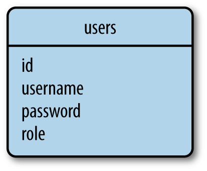

一个数据库存储应用程序数据在一种组织方式里。当数据被需求时应用程序然后提出queries疑问到取回明确的部分。为了web应用程序大多数常规地使用数据库是基于relational模式，也叫做它们用的关于结构疑问语言SQL数据库。但在近几年里，document-oriented数据库和key-value数据库，没正式被认可一起作为NoSQL数据库变成受欢迎的备选方案。
有关数据库把数据存储在表格里，哪一种模式不同的实体存在在应用程序的领域里。例如，为一个命令管理应用程序的一个数据库会有像customers，products和orders表格。
一个表格有一个固定的columns数字和一个可变的rows数字。列定义了通过表格表现出来的实体的数据属性。例如，一个customers表格将有如下列：name，address，phone等等。在一个表格里的每行定义了一个实际的数据元素，这元素是由为所有列的值组成。
表格有一个特殊列叫做primary key，这个primary key保持一个为每行存储在表格里特殊的标识。表格也能有叫做foreign keys的列，这个foreign keys注明从相同表格或者其它表格中的另一行的primary key。这些在称为relationships的行之间的连接是关系型数据库的基础。
图示5-1展示里一个带有2个表格的简单数据库的图表，2个表格存储了用户和用户规则。连接这2个表格的线表示出一个两表之间的关系。
图示5-1. 关系型数据库示例
在这个数据库图表中，roles表格存储了所有可能的用户规则列表，每个用户规则通过一个特殊id值即表格的primary key来识别。用户表格包含用户列表，每个用户也都有它自己的特殊id。除了id的primary keys之外，roles表格有一个name列和users表格有username和password列。在user表格里的role_id列是一个foreign key，foreign key注明了一个规则的id出处，并且用这样的方式规则分配给每个被建立的用户。
在这个例子中所看到的，关系型数据库有效地存储数据以及避免副本。在这个数据库中重命名一个用户规则是简单的，因为规则名字存在在一个单独的地方。立即一个规则名字被改变了之后，所有用户有一个role_id注明改变了的规则将会看到更新。
另外一方面，拥有的数据分成多个表格会成为一个复杂。用用户的规则生产一个用户列表出现一个小问题，因为用户和用户规则需要从2个表格中读取以及在它们一起出现之前被加入。当需要时，关系型数据库引擎提供表与表之间执行加入操作支持。
数据库不会随着在前面部分描述的关系模型全部归类为NoSQL数据库。一个常见的NoSQL数据库组织使用collections来代替表格和使用documents来代替记录。NoSQL数据库以一种让加入困难的方式被设计出来，所以它们的大多数根本不支持这种加入操作。对于一个NoSQL数据库结构成像做图示5-1中那样，列出带有用户规则的用户需要应用程序自身执行加入操作，通过读取每个用户的role_id区域接着为加入操作搜索roles表格。
这里讲解了为了达到图示5-1的效果，SQL数据与NoSQL数据库在操作过程中的不同。SQL数据库是读取和加入两个操作，而NoSQL数据库是读取和搜索。也就是说NoSQL数据库用程序自身搜索功能代替了SQL数据库中的加入操作，因为在NoSQL数据库被设计时就取消了加入操作这个功能，这也是区别于SQL数据的特征。
为了一个NoSQL数据库的一个更适当的设计被展示在图示5-2中。这就是应用一个成为denormalization操作的结果，这种操作在数据副本花费上减少了表格的数量。
图示5-2. NoSQL数据库例子 
一个带有这样结构的数据库随着每个用户都有规则名字明确地被存储着。重命名一个规则接下来的结果是产生一个高昂的操作，这个操作可能需要更新大量documents文档。
但用NoSQL数据库这不都是坏事。因为更快的疑问许可数据被复制。列出用户和用户规则是直接的，因为没有加入需要了。
在一个高效的紧密的形式中SQL数据库在存储结构化数据上胜出。这些数据库用大量长度来保护一致性。NoSQL数据放松了一些一致性需求并且作为一个结果有时能获得一个性能优势。
一个完全分析以及数据库类型的比较是超出本书范畴的。为了小尺寸到中型尺寸的应用程序，SQL和NoSQL数据库都是很好的选择，并且实际上有相等的性能。
Python有为数据库引擎的扩展包，即有开源的又有商业的。什么样的数据库扩展包能被使用Flask是没有限制的，所以如果这些当中任何一款是你所喜欢的，你可以与MySQL，Postgres，SQLite，Redis，MongoDB或者CouchDB一起工作。
好像这些都不够选择的话，这也有许多数据库抽象层扩展包，例如SQLAlchemy或者MongoEngine允许你用正规Python对象工作在一个更高水平上来代替数据库实体，例如表格，文档或者疑问语言。
数据库实体有哪些？这里说了几个，表格、文档、疑问语言都是数据库实体的具体内容。
当选择一个数据库框架时，这里有大量因素会影响评价：
当直接比较数据库引擎对抗数据库抽象层时，第二组明显胜出。抽象层，也叫做对象关系映射(ORMs)或者对象文档映射(ODMs)，抽象层提供清晰的以对象为目的的高级别操作到低级别数据库指令的转换。
ORMs和ODMs从对象领域翻译到数据库领域的转换有一个总开销。在大多数情况中，性能处罚是可以忽略的，但它们并不总是这样。通常，使用ORMs和ODMs获得的生产力比一点性能上的下降更有价值，所以这不是一个完全放弃ORMs和ODMs的有效理由。选择一个数据库抽象层就讲得通了，而且这个数据库抽象层提供任选通向下面的数据库以防特殊操作需要被优化，特殊操作被优化是通过直接执行它们作为本地数据库指令。
在你的开发和产品平台上数据库选择是有效的这一点必须被考虑。例如，如果你计划在一个云平台上设置你的应用程序主机，那么你应该找出这服务所提供的什么样的数据库选择。
另外可移植性方面应用到ORMs和ODMs。尽管这些框架某方面为一个单独数据库引擎提供一个抽象层，其它的抽象甚至更高并且提供一个数据库引擎的选择，用一样的以对象为目的的接口都是可进入的。最好的这个示例就是SQLAlchemy ORM，这个东西支持一个关系数据库引擎的列表，包括受欢迎的MySQL，Postgres，和SQLite。
abstraction抽象怎么理解？abstract有把...抽象出、提取、转移等意思，那么abstraction layer抽象层的理解可以说抽象层具有把什么东西转移到其它地方的功用。像前面提到的，选择抽象层可以防止某些操作对数据库执行本地化指令的效果，这样数据库就不容易被篡改。
选择一个用Flask集成的框架不是绝对需要的，但它会保存你自己写的集成代码。Flask集成可以简化配置和操作，所以使用一个专门设计的package作为一个Flask扩展是首选。
基于这些目标，为本书中的示例选择的数据库框架会是Flask-SQLAlchemy，这是为SQLAlchemy设计的Flask扩展包。
Flask-SQLAlchemy是一个Flask扩展，在Flask应用程序里简化了SQLAlchemy的使用。SQLAlchemy是一个有力的关系数据库框架，这框架支持很多数据库后端。它提供一个高级别ORM和低级别进入数据库的本地SQL功能。
高级别与低级别的区别是什么？怎么理解高级别和低级别？
像大多数其它扩展，Flask-SQLAlchemy用pip来安装：
在Flask-SQLAlchemy里，一个数据库被指定成一个URL。表格5-1为三个最受欢迎的数据库引擎列出了数据库URL的格式。
在这些URL里，hostname指的是主持MySQL服务的服务器，这服务器可以是localhost或者是一个远程服务器。数据库服务器能主持很多数据库，所以database表明了使用的数据库名字。因为数据库需要证明，username和password是数据库用户凭证。
SQLite数据库没有一个服务器，所以hostname，username，和password被省略了并且database是一个磁盘文件的文件名。
在Flask配置对象里应用程序数据库的URL必须被配置成SQLALCHEMY_DATABASE_URI钥匙。另外有用的选项是配置钥匙SQLALCHEMY_COMMIT_ON_TEARDOWN，这个能被设置成True来开启在每个请求末尾数据库变化的自动委托。查阅Flask-SQLAlchemy文档获得其它配置选项信息。示例5-1展示如何初始化和配置一个简单的SQLite数据库。
示例5-1. hello.py：数据库配置
db对象从SQLAlchemy类被例示阐明数据库和提供所有Flask-SQLAlchemy的功能入口。
model术语用来指明持续的被应用程序使用的实体。在一个ORM环境里，一个模型是典型的一个带有属性的Python类，匹配一个相应的数据库表格列。
数据库场合从Flask-SQLAlchemy提供了一个为了模型的基础类，还提供了一套类和函数助手，这套助手被用来定义它们的结构。从图示5-1来的roles和users表格能被定义为模块Role和User，如示例5-2中展示的那样。
示例5-2. hello.py：Role和User模块定义
__tablename__类变量定义在数据库中表格的名字。如果__tablename__被忽略了Flask-SQLAlchemy分配一个默认表格名字，但那些默认名字不会遵循因为表格名字使用复数的惯例，所以它是最好用来明确地命名表格。剩下的类变量是模块的属性，定义成db.Column类的场合。
第一个自变量被给到db.Column构造器是数据库列的类型和模块属性。表格5-2列出一些列类型，这些类型是变量，在模块中与使用的Python类型一起使用。
对于db.Column剩下的自变量为每个属性指定配置选项。表格5-3列出选项的一些变量。
Flask-SQLAlchemy需要所有模型去定义一个primary key列，正常来说被命名为id。
尽管这不需要那么严格，为了调试和测试的目的，两个模块包含一个__repr__()方法来给它们一个可读字符串的表示法被使用了出来。
关系数据库在不同表格中通过关系的使用来建立行与行之间的连接。在图表5-1中的关系图解表达了一个用户与用户规则之间的简单的关系。这是一个从规则到用户的one-to-many一对多关系，因为一个规则属于很多用户和众多用户只有一个规则。
示例5-3展示一对多关系在图示5-1中是如何在模块类中表现出来的。
示例5-3. hello.py：关系
在图示5-1中所见，一个关系通过一个foreign key连接到2个行。role_id列被增加到User模块被定义成一个foreign key，并且建立了关系。'roles.id'自变量指向db.ForeignKey()说明列应该被解释成在roles表格里从行获得id值。
users属性被增加到模块Role表示关系的以对象为目的的方法。所给出的一个Role类的场合，users属性的场合将返回与规则有关联的用户的列表。第一个自变量指向db.relationship()包含什么样的模块是关系的另一边。如果类没有被定义的话，这个模块能被用来作为一个字符串。
backref自变量指向db.relationship()通过增加一个role属性到User模块，定义了关系的反向。这个属性能被用来替换role_id到Role模块入口，作为一个对象代替一个foreign key。
在大多数原因中db.relationship()能把关系的foreign key设置在它自己身上，但有些时候它不能确定什么样的列用作一个foreign key。例如，如果用户模块有2个或者更多列被定义成Role foreign keys，那么SQLAlchemy不会知道用2个中的哪一个。无论什么时候foreign key配置是含糊不清的，额外的自变量指向db.relationship()需要被给出。表格5-4列出了一些常用配置选项能被用在定义一个关系上。
如果你已经在GitHub上克隆了应用程序的Git容器，你可以运行git checkout 5a来检查应用程序的这个版本。
除了one-to-many一对多，这里有其它关系类型。one-to-one一对一关系能被表达为早期一对多的表述，但在db.relationship()定义里使用uselist选项设置为False，那么many这边变成了一个one。如果表格是逆序的many-to-one关系也能被表达为一个一对多，或者它可以用foreign key和db.relationship()定义一起被表达在many那边。大多复杂的关系类型，many-to-many，需要一个额外的表格，这个额外的表格被叫做一个association table社交表格。你将在第十二章学习关于多对多关系。
模块根据图示5-1中的数据库图解现在完全被配置了并且已经准备好被使用。最好的方法来学习如何与这些模块一起工作是在一个Python shell里。接下来的部分将带你走过大部分常用数据库操作。
第一件真正要做的事情是指示Flask-SQLAlchemy基于在模块类上去建立一个数据库。db.create_all()函数来做这件事：
当我执行这个的时候，出现以下信息： $ python hello.py shell D:\flasky\venv\lib\site-packages\flask\exthook.py:71: ExtDeprecationWarning: Importing flask.ext.script is deprecated, use flask_script instead. .format(x=modname), ExtDeprecationWarning D:\flasky\venv\lib\site-packages\flask\exthook.py:71: ExtDeprecationWarning: Importing flask.ext.bootstrap is deprecated, use flask_bootstrap instead. .format(x=modname), ExtDeprecationWarning D:\flasky\venv\lib\site-packages\flask\exthook.py:71: ExtDeprecationWarning: Importing flask.ext.moment is deprecated, use flask_moment instead. .format(x=modname), ExtDeprecationWarning D:\flasky\venv\lib\site-packages\flask\exthook.py:71: ExtDeprecationWarning: Importing flask.ext.wtf is deprecated, use flask_wtf instead. .format(x=modname), ExtDeprecationWarning D:\flasky\venv\lib\site-packages\flask\exthook.py:71: ExtDeprecationWarning: Importing flask.ext.sqlalchemy is deprecated, use flask_sqlalchemy instead. .format(x=modname), ExtDeprecationWarning D:\flasky\venv\lib\site-packages\flask_sqlalchemy\__init__.py:800: UserWarning: SQLALCHEMY_TRACK_MODIFICATIONS adds significant overhead and will be disabled by default in the future. Set it to True to suppress this warning. warnings.warn('SQLALCHEMY_TRACK_MODIFICATIONS adds significant overhead and will be disabled by default in the future. Set it to True to suppress this warning.') 我根据这些错误提示信息做出相关文件变更后就没有这些错误提示了。从错误提示中发现新版本的flask中把ext这部分去掉了，所以导入flask的相关模块不再需要ext，而是直接flask_后跟模块名字。更改flask_sqlalchemy的初始化文件中800行错误提示时，实际上是要把D:\flasky\venv\lib\site-packages\flask_sqlalchemy\__init__.py文件中797行的None值改成True。下面列出修改前后的代码对比： def init_app(self, app): """This callback can be used to initialize an application for the use with this database setup. Never use a database in the context of an application not initialized that way or connections will leak. """ app.config.setdefault('SQLALCHEMY_DATABASE_URI', 'sqlite://') app.config.setdefault('SQLALCHEMY_BINDS', None) app.config.setdefault('SQLALCHEMY_NATIVE_UNICODE', None) app.config.setdefault('SQLALCHEMY_ECHO', False) app.config.setdefault('SQLALCHEMY_RECORD_QUERIES', None) app.config.setdefault('SQLALCHEMY_POOL_SIZE', None) app.config.setdefault('SQLALCHEMY_POOL_TIMEOUT', None) app.config.setdefault('SQLALCHEMY_POOL_RECYCLE', None) app.config.setdefault('SQLALCHEMY_MAX_OVERFLOW', None) app.config.setdefault('SQLALCHEMY_COMMIT_ON_TEARDOWN', False) track_modifications = app.config.setdefault('SQLALCHEMY_TRACK_MODIFICATIONS', None) if track_modifications is None: warnings.warn('SQLALCHEMY_TRACK_MODIFICATIONS adds significant overhead and will be disabled by default in the future. Set it to True to suppress this warning.') def init_app(self, app): """This callback can be used to initialize an application for the use with this database setup. Never use a database in the context of an application not initialized that way or connections will leak. """ app.config.setdefault('SQLALCHEMY_DATABASE_URI', 'sqlite://') app.config.setdefault('SQLALCHEMY_BINDS', None) app.config.setdefault('SQLALCHEMY_NATIVE_UNICODE', None) app.config.setdefault('SQLALCHEMY_ECHO', False) app.config.setdefault('SQLALCHEMY_RECORD_QUERIES', None) app.config.setdefault('SQLALCHEMY_POOL_SIZE', None) app.config.setdefault('SQLALCHEMY_POOL_TIMEOUT', None) app.config.setdefault('SQLALCHEMY_POOL_RECYCLE', None) app.config.setdefault('SQLALCHEMY_MAX_OVERFLOW', None) app.config.setdefault('SQLALCHEMY_COMMIT_ON_TEARDOWN', False) track_modifications = app.config.setdefault('SQLALCHEMY_TRACK_MODIFICATIONS', True) if track_modifications is None: warnings.warn('SQLALCHEMY_TRACK_MODIFICATIONS adds significant overhead and will be disabled by default in the future. Set it to True to suppress this warning.') 我引用了781——800行的代码，这里我们可以看出这是一个对应用程序初始化的函数，在这里791行中None改成True就可以解决错误提示问题。
如果你检查应用程序目录，你现在将看到一个叫做data.sqlite新文件在那里，在配置中被给出的名字指向SQLite数据库。如果表格已经在数据库中存在的话db.create_all()函数不会重新建立或者更新一个数据库表格。当模块被修改并且改变需要被应用到一个存在的数据库时这可能不方便。暴力解决方案达到更新存在的数据库表格是先删除旧表格：
不幸的是，这种方式具有不希望有的一面，就是在旧数据库中摧毁所有数据的效果。对于更新数据库的问题一个更好的解决方案在本章快结束时被提出来。
接下来的例子建立一些规则和用户：
构造函数支持模块接受给模块属性初始化的值作为关键字变量。注意甚至role属性能被使用，甚至不是一个真的数据库列而是一个一对多关系的高级别表示法。这些新对象的id属性没有明确的被设置：primary key通过Flask-SQLAlchemy被管理。迄今为止对象只存在在Python一方；它们也不能被写到数据库。因此它们的id值还没有被分配：
变化到数据库通过一个数据库session被管理着，那Flask-SQLAlchemy提供db.session来实现。为了准备好对象被写到数据库，它们必须被添加到session：
或者，更简明地：
为了把对象写到数据库，会话需要通过commit()方法被委托：
再次检查id属性；它们现在被设置了：
我现在清楚了，在python中建立Role和User后并没有保存到数据库中，所以查询其中的id返回的是None。所以要把建立的表格内容写到数据库中还要有2个步骤，就是db.session.add()和db.session.commit()这2个操作完成后，再查询其id才成功。
db.session数据库会话与在第四章中讨论的Flask session对象没有关系。数据库会话也被叫做transactions会报。
数据库会话在保持数据库一致中是非常有用的。委托操作写入了所有被增加到会话的对象。在会话被写入时如果一个错误发生，整个会话被丢弃。如果你总是在一个会话中委托相关变化，你得保证避免由于部分数据库更新导致的数据库不一致。
一个数据库会话也能被rolled back退回重来。如果db.session.rollback()被调用了，任何已经增加到数据库会话的对象被恢复到在数据库中它们已有状态。
数据库rolled back需要做一些实验来了解数据库中保持数据一致以及数据丢失问题。
数据库会话的add()方法也能用来更新模块。继续在一个相同shell会话里，接下来例子重命名"Admin"规则为"Administrator"：
数据库会话也有一个delete()方法。接下来的例子从数据库删除了"Moderator"规则：
注意删除操作，想插入操作和更新操作一样，只在数据库会话被委托的时候才被执行。
query在英文翻译中有疑问、疑问号、质问名字意思，也有质问、对...表示怀疑的动词意思。这里采用直译，但理解上query是有查询数据库的操作之含义，这也不难理解，就是操作员对数据库提出疑问，数据库会给出相关答案。
Flask-SQLAlchemy建立一个query对象可用在每个模块类中。关于一个模块最基本的query是返回一次相应表格的完整内容：
一个疑问对象能被配置到通过过滤器的使用发行更多明确的数据库搜索。接下来的例子找到所有被分配给"User"规则的用户：
它仍然可能检查本地SQL疑问，为了一个给出的疑问SQLAlchemy是通过转化疑问对象到一个字符串生产出本地SQL疑问：
如果你退出shell会话，在先前例子中所建立的对象作为Python对象将停止存在但作为行将继续分别存在于各自的数据库表格中。如果你开始一个新shell会话标记，你不得不从它们的数据行里重新建立Python对象。接下来的例子公布一个用名字"User"加载用户规则的疑问：
像filter_by()这样的过滤器被调用在一个疑问对象上并且返回一个新的精炼的疑问。多种多样的过滤器能被逐一调用直到因为需要疑问被配置。
表格5-5展示能用在疑问上的一些最常用过滤器。完整列表是在SQLAlchemy documentation中。
在想得到的过滤器被应用到疑问之后，一个调用到all()将引起疑问执行并且返回一个列表结构，但除了all()这里有其它方法触发一个疑问的执行。表格5-6展示其它疑问执行方法。
关系工作起来与疑问是相似的。接下来的例子在规则和用户之间从两者末尾质问一对多关系：
这里的user_role.users疑问有一个小问题。当user_role.users表达式被内部发表出来时，运行绝对的疑问调用all()来返回用户的列表。因为疑问对象是隐藏的，用附加的疑问过滤器精炼疑问对象是不可能的。在这个特定的例子中，请求用户列表按字母顺序命令被返回也许是有用的。在示例5-4中，关系的配置是被用一个lazy = 'dynamic'自变量修饰来请求疑问自动地不被执行。
示例5-4. app/models.py：动态关系
在这个用被配置的关系方法中，user_role.users返回了一个根本没执行的疑问，所以过滤器能被增加到疑问：